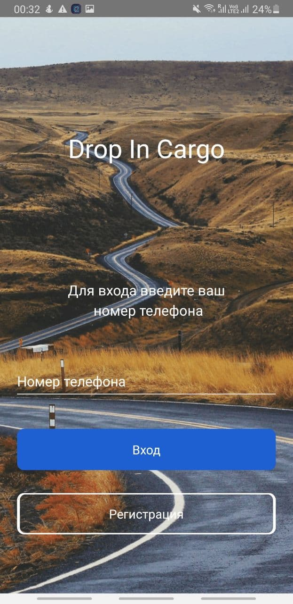
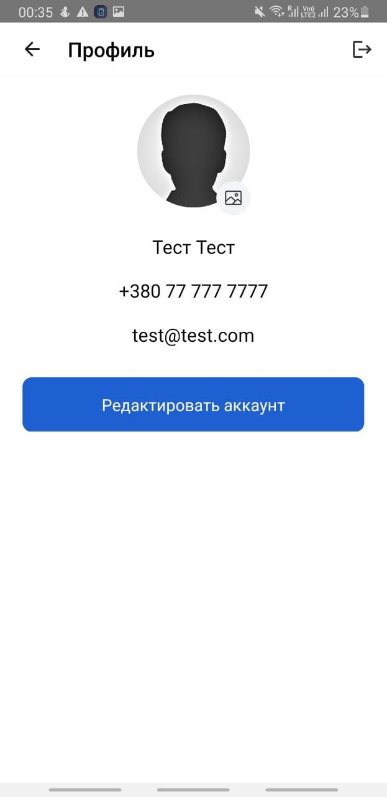

<div class="bg" [style.background-image]="'url(../../assets/img/background.png)'">
  <div class="main-div">
    <div style="text-align: center" class="menu-full example-button-row">
      <button type="button" mat-raised-button color="primary" routerLink="/" routerLinkActive="active">
        О компании
      </button>
      <button type="button" mat-raised-button color="primary" routerLink="/owners" routerLinkActive="active">
        Грузоотправителям
      </button>
      
      <button type="button" mat-raised-button>
        Грузоперевозчикам
      </button>
      <button type="button" mat-raised-button color="primary" routerLink="/contacts" routerLinkActive="active">
        Обратная связь
      </button>
    </div>
    <div class="menu-burger">
      <button mat-icon-button [matMenuTriggerFor]="menu" aria-label="Example icon-button with a menu">
        <mat-icon>menu</mat-icon>
      </button>
      <mat-menu #menu="matMenu">
        <span mat-menu-item matTooltip="Грузоперевозчикам">Грузоперевозчикам</span>
        <hr>
        <button mat-menu-item routerLink="/" routerLinkActive="active">
          <span>О компании</span>
        </button>
        <button mat-menu-item routerLink="/owners" routerLinkActive="active">
          <span>Грузоотправителям</span>
        </button>
        <button mat-menu-item routerLink="/contacts" routerLinkActive="active">
          <span>Обратная связь</span>
        </button>
      </mat-menu>
    </div>
    <!-- Colored FAB button -->
    <div class="parent-text">
          <span class="center-styled-text">Drop in cargo – грузоперевозки в смартфоне</span>
    </div>
    <div><br /><hr /><br />
      <div class="page page-passenger">

        
        <p>Скачайте мобильное приложение DropInCargo на свой телефон. Доступно в Play Market и AppStore.</p>
        <div class="clear"></div>

        
        <p>Для регистрации, введите свои данные. Для подтверждения номера вы получите SMS с проверочным кодом, введите его.</p>
        <div class="clear"></div>

        
        <p>Нажмите подтвердить.</p>
        <div class="clear"></div>

        
        <p>В поле "Код из SMS" введите цифры, пришедший Вам в смс. Будьте внимательны - неверно введенный код не позволит завершить регистрацию.</p>
        <div class="clear"></div>

        
        <p>Нажмите на гамбургер меню для того, чтобы завершить регистрацию.</p>
        <div class="clear"></div>

        
        <p>Нажмите на Ваше имя и/или фото чтобы проверить введенные Вами данные и дополнить информацию.</p>
        <div class="clear"></div>

        
        <p>Для изменения информации - нажмите кнопку "Редактировать аккаунт".</p>
        <div class="clear"></div>

        
        <p>Чтобы создать свой автомобиль в приложении - в гамбургер меню выберите "Мой транспорт".</p>
        <div class="clear"></div>

        
        <p>Чтобы добавить автомобиль - в открывшемся окне нажмите "Добавить транспорт".</p>
        <div class="clear"></div>

        
        <p>Заполните информацию об автомобиле.</p>
        <div class="clear"></div>

        
        <p>Чтобы добавить фото автомобиля - нажмите на секции "Добавьте фото автомобиля".</p>
        <div class="clear"></div>

        
        <p>В списке "Мой транспорт" появился Ваш новый автомобиль.</p>
        <div class="clear"></div>

        
        <p>Чтобы добавить свободный автомобиль в работу - в основном меню выберите "Добавить свободную машину".</p>
        <div class="clear"></div>

        
        <p>В открытом окне на карте укажите точку, где находится сводобный транспорт и нажмите "Выбрать автомобиль".</p>
        <div class="clear"></div>

        
        <p>Выберите автомобиль из списка доступных машин.</p>
        <div class="clear"></div>

        
        <p>Машина появится на карте.</p>
        <div class="clear"></div>

        
        <p>Чтобы самостоятельно выбрать активеую заявку из списка - в основном меню нажмите на кнопку "Поиск заявок".</p>
        <div class="clear"></div>

        
        <p>Вы увидите список активных заявок. Для выбора заявок, подходящих по категориям - воспользуйтесь фильтром в правом нижнем углу.</p>
        <div class="clear"></div>

        
        <p>Если Вы откроете подходящую заявку, нажав на ней в спике - Вы увидите детали по заявке. Вы можете предложить другую цену или забрать заявку в работу. Если заказчику понравится Ваше предложение и он его примет - Вы получите уведомление.</p>
        <div class="clear"></div>

        
        <p>Ваше предложение появится внизу заявки и Вы сможете отслеживать ее статус.</p>
        <div class="clear"></div>

        
        <p>Если Вы забираете зявку в работу - Вы автоматически соглашаетесь с ценой. Вам откроются контакты заказчика и Вы можете созвониться с ним.</p>
        <div class="clear"></div>

        <h3>Правила сервиса:</h3>
        <ul>
           <li>Если вы водитель и передумали ехать, отмените заказ в приложении или позвоните заказчику.</li>
        </ul><br /><br />
      </div>
    </div>
  </div>
</div>
